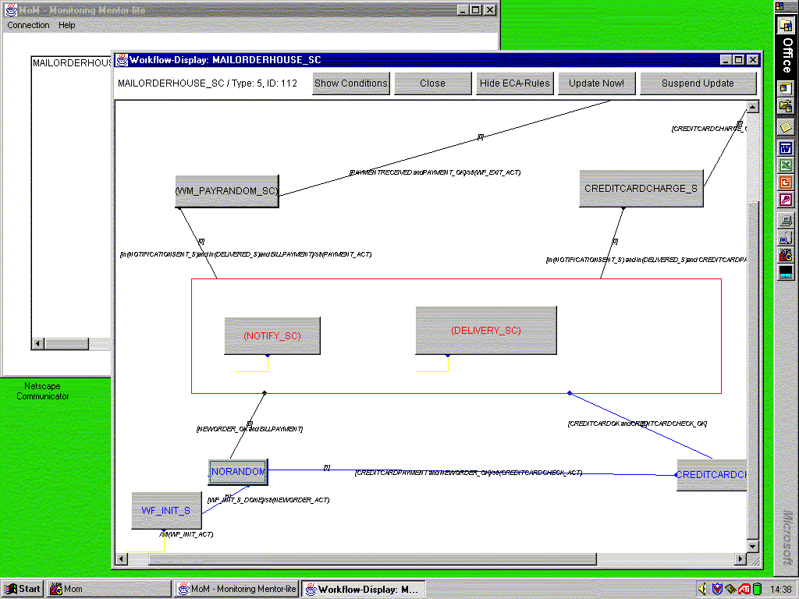

| Next Step |
Monitoring Tool
The monitoring tool for Mentor-lite (coined "MoM") collects information about currently executed workflows. Apart from gathering information about the current system status ("which workflows are executed currently?"), we can collect information about an individual workflow which is running in the system. This information includes the current state of the workflow, the path through earlier visited states (the "trace"), and the time spent in the different states.
In order to aquire this information, MoM connects to a database that holds all relevant information about currently running workflow instances. For the graphical output, MoM reads the state charts from the workflow specifications.
MoM is entirely written in Java which makes it platform independent. It uses the standard JDBC interface which makes it independent from the underlying database. The ability to connect remotely to a database and to read the workflow specification via http connection allows monitoring the WFMS remotely.
 |
| (click on figure to enlarge) |
When MoM is started, it shows the main window. On the left hand side there is a list of all currently active workflow instances. This list is continuously updated. The lower text area gives some information about the database connection. All errors that may occur during the connection are shown here. The two buttons on the right hand side allow the user to trigger an immediate update of the list of active workflows or to quit the monitoring tool.
For viewing an individual workflow, the user can select it by double-clicking on the appropriate list item.
 |
| (click on figure to enlarge) |

After choosing an item from the list of active workflows, a new window is opened that shows the workflow specification as a graph. In the upper part of the window, we see the name, the id of the type, and the id of the instance of the workflow. These ids are the unique identification of the workflow instance.
The main area of the new window contains the graphical specification of the workflow. The states of the workflow are shown as buttons in the case of "normal" states, or as frames if the state contains subworkflows which are executed in parallel. For a state that corresponds to just one subworkflow, its name is shown in parentheses. The transitions are shown as arrows between the states, with a small circle denoting the target of the transition. The previously traversed path through the workflow is marked in blue, the currently active state is marked in red. The small numbers at the transitions indicate how often they have been traversed so far. This way we provide information about loop iterations. The graphical presentation is updated continuously.
Four buttons at the top of the window serve to configure the graphical presentation. By pressing the "Show Conditions" button the user obtains information about the current values of the workflow's conditions. The "Show/Hide ECA-Rules" button allows us to show or hide the EC/A (Event-Conditon-Action) rules of the transitions for a clearer view of large workflows. The "Start/Suspend Update" button serves to start or suspend the automatic update of the window. With this button, the user can freeze the monitoring when she wants to evaluate the current state or produce screenshots. When the "Update Now" button is pressed, the window is immediately updated. The "Close" button closes the window.
Subworkflows can by monitored by clicking on the corresponding state in the workflow graph.
 |
| (click on figure to enlarge) |
By clicking on the button that represents a "normal" state of the workflow, a new window is opened, showing information about the selected state. This information includes the name of the state's corresponding activity and the time of the last visit.
At the end of our demo, we have a look at the configuration tool of Mentor-lite ...
| Next Step |